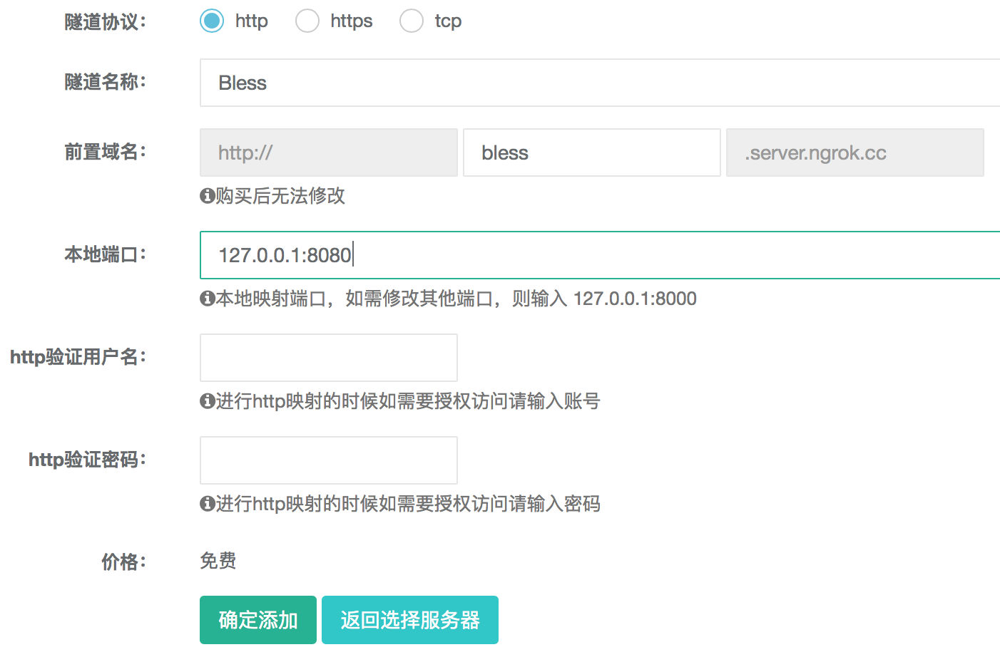
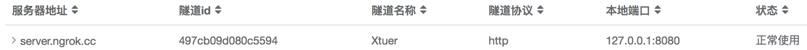
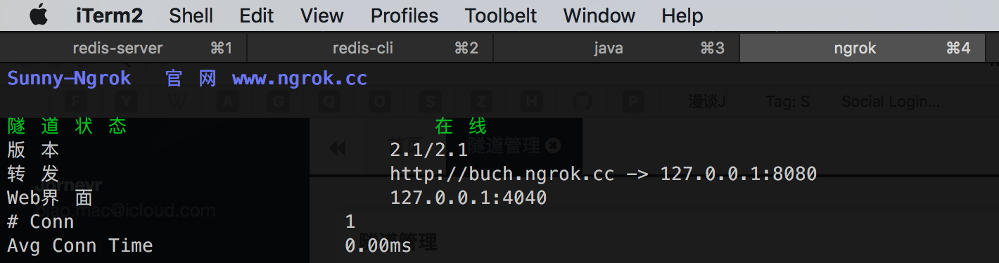
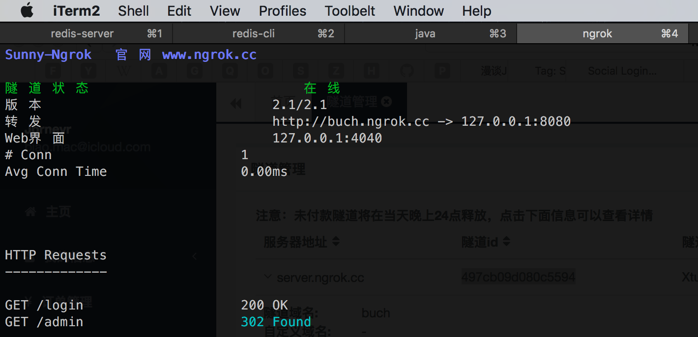

例如我们开发了一个网站，运行在我们自己的电脑上，本地访问地址是 http://localhost.com:8080，但是只能在自己的电脑和局域网访问，外网访问不了，例如在做微信公众号开发时如果不能被外网访问就很不方便。如果想要外网能访问我们的网站，则需要:
- 购买一个域名和空间，把我们的网站部署上去
- 使用工具把本地的网站服务映射为外网可访问的，例如 Ngrok，可支持 Mac，Windows，Linux
Ngrok 的使用
安装 Ngrok: 到 Ngrok 下载，解压即可
运行 Ngrok:
./ngrok http 8080，输出1
2
3
4
5
6Version 1.7/1.7
Forwarding http://3f506cbe.ngrok.io -> 127.0.0.1:8080
Forwarding https://3f506cbe.ngrok.io -> 127.0.0.1:8080
Web Interface 127.0.0.1:4040
# Conn 0
Avg Conn Time 0.00ms弊端是前置域名是随机的，例如上面的
3f506cbe使用
8080端口启动我们的电脑上的网站项目 (因为上面启动 Ngrok 时使用的是 8080)从浏览器中访问 http://3f506cbe.ngrok.io，发现访问的是我们的网站
外网访问: 使用手机的 4G 网络，在手机的浏览器中访问 http://3f506cbe.ngrok.io，访问的也是我们的网站
Ngrok 的服务器在国外，速度有些慢，国内有 ngrok.cc 对其封装了一下，速度快很多。
同样的工具，有如花生壳
Ngrok.cc 的使用
访问 http://www.ngrok.cc 下载
ngrok访问 http://www.ngrok.cc/login 注册、登陆
点击
隧道管理>开通隧道>立即购买(可以使用免费的)填写
隧道名称、前置域名、本地端口(本地 Web 服务的端口，例如 Tomcat 常用 8080)，其他的可以不填点击
确定添加，然后在隧道管理>隧道管理可以看到刚才添加的隧道
启动本地 Web 服务，其端口是开通隧道时用的 8080
启动 ngrok:
./ngrok clientid 497cb09d080c5594497cb09d080c5594为隧道 id
访问 http://buch.ngrok.cc/admin
